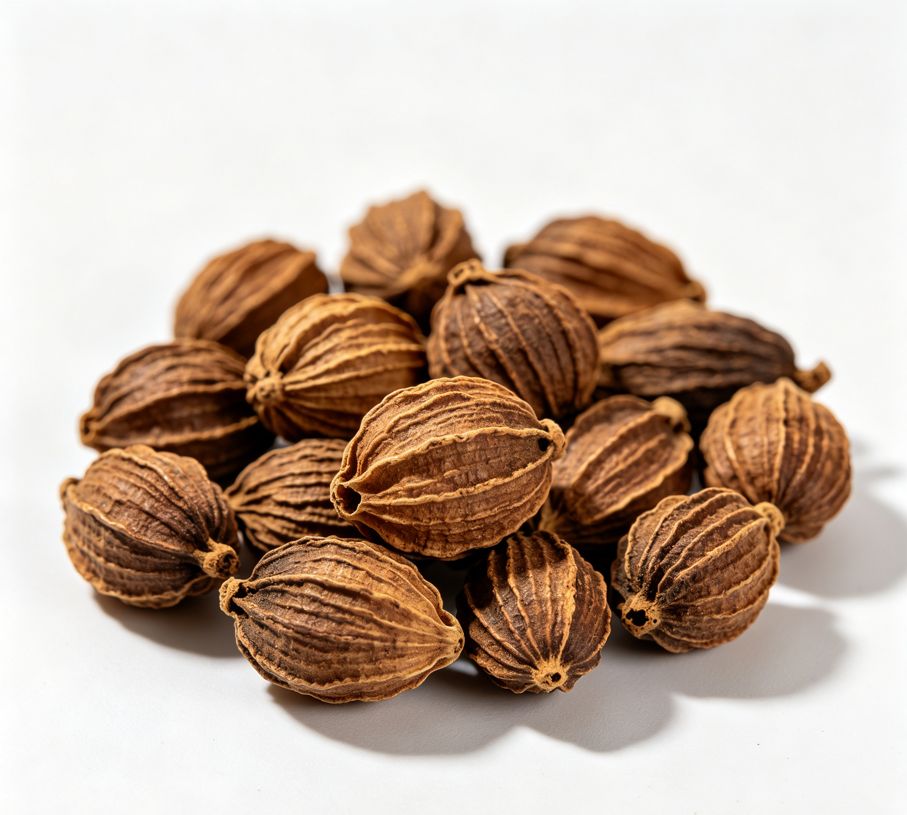

📋 基本信息
中文名益智仁
拉丁名Alpinia oxyphylla Miq.
英文名Alpiniae Oxyphyllae Fructus
产地科属：姜科（Zingiberaceae）山姜属（Alpinia），拉丁学名Alpinia oxyphylla Miq.。生态环境：生于林下阴湿处，多为栽培。主产地：海南（道地产区，产量居首）、广东（阳江等地栽培历史悠久），福建、广西、云南亦有栽培。【《中华本草》及道地药材文献】
性状本品呈椭圆形，两端略尖，长1.2～2cm，直径1～1.3cm。表面棕色或灰棕色，有纵向凹凸不平的突起棱线13～20条，顶端有花被残基，基部常残存果梗。果皮薄而稍韧，与种子紧贴，种子集结成团，中有隔膜将种子团分为3瓣，每瓣有种子6～11粒。种子呈不规则的扁圆形，略有钝棱，直径约3mm，表面灰褐色或灰黄色，外被淡棕色膜质的假种皮；质硬，胚乳白色。有特异香气，味辛、微苦。【《中国药典》2020年版一部】
用法用量3～10g。【《中国药典》2020年版一部】
贮藏置阴凉干燥处。【《中国药典》2020年版一部】
☯ 传统属性
四气温
五味辛
归经脾、肾经
功能主治暖肾固精缩尿，温脾止泻摄唾。用于肾虚遗尿，小便频数，遗精白浊，脾寒泄泻，腹中冷痛，口多唾涎。【《中国药典》2020年版一部】
禁忌症阴虚火旺或因热而患遗精、尿频、崩带者忌服。【《中华本草》及《本草经疏》等传统文献】
毒性常规剂量（3～10g）下安全。辛温燥烈，过量或长期服用可助火伤阴，出现口干、咽痛、便秘、小便短赤等上火症状；所含挥发油对胃肠道有一定刺激性，空腹大量服用可致胃部灼热不适；阴虚火旺者误用可加重潮热、盗汗、失眠等症状。药膳食用应从小量开始，湿热体质者不宜。
适宜体质气虚质、平和质、阳虚质、阴虚质
适宜证型气虚证、脾胃气虚证、阳虚证、肾阳虚证
🔬 现代研究
主要成分益智仁主要含挥发油、黄酮、二芳基庚烷类等成分。挥发油含量不得少于1.0%，主要成分为圆柚酮（诺卡酮，nootkatone）、芳樟醇、桃金娘烯醛、α-与β-蒎烯、萜品烯-4-醇、1,8-桉叶素等；黄酮类有白杨素、山柰素、杨芽黄素（tectochrysin）、益智酮甲/乙（yakuchinone A/B，二芳基庚烷类）；另含原儿茶酸等酚酸、多糖、氨基酸、脂肪酸及维生素B1、B2、C、E等。【《中华本草》及公开成分研究文献】
药理作用①心血管系统：甲醇提取物可增强左心房收缩力（强心），具钙拮抗及舒张/调节大血管作用；②消化系统：水提物和醇提物可抑制回肠收缩，具抗胃损伤、健胃作用；③抗利尿、减少唾液分泌：为传统'缩尿摄唾'功效的药理基础；④生殖系统相关：甲醇提取物可抑制前列腺素合成酶活性；⑤神经保护：白杨素、原儿茶酸等成分在动物实验中显示改善学习记忆、抑制乙酰胆碱酯酶、抗神经炎症作用；⑥另有抗癌（抑制S180等肿瘤细胞）、抗氧化、抗衰老、提高能量代谢、升高外周血白细胞等报道。【《中华本草》及公开科研文献综述】
食疗功效益智仁辛温，入脾肾，食疗取温脾暖肾、固精缩尿、开胃摄唾之效，民间有'状元果'之称，传统认为其有温中益气、安神益智之用。经典药膳有益智仁粥（配糯米、山药）、益智固肾汤（配黑豆、山药、瘦肉）、益智仁炖猪小肚（治夜尿多）等，多用于脾肾虚寒体质的调理，适用于畏寒肢冷、夜尿频、晨泻、口淡多涎者日常温补。
食养禁忌
🏭 产品形态与潜在功能
推荐形态
粉末丸剂干果
潜在功能